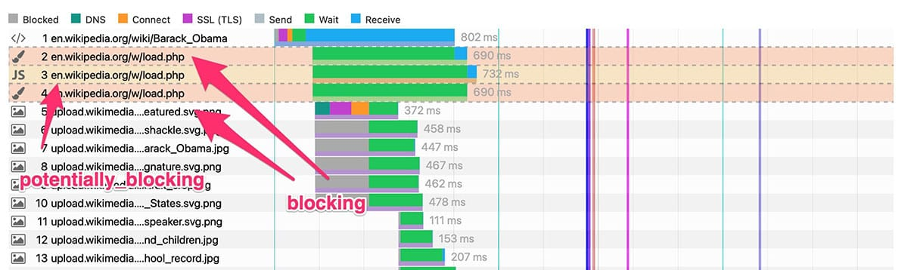
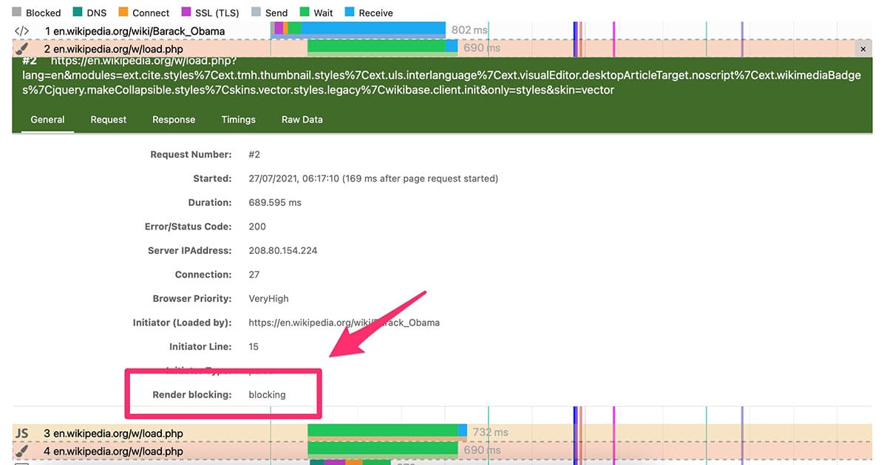
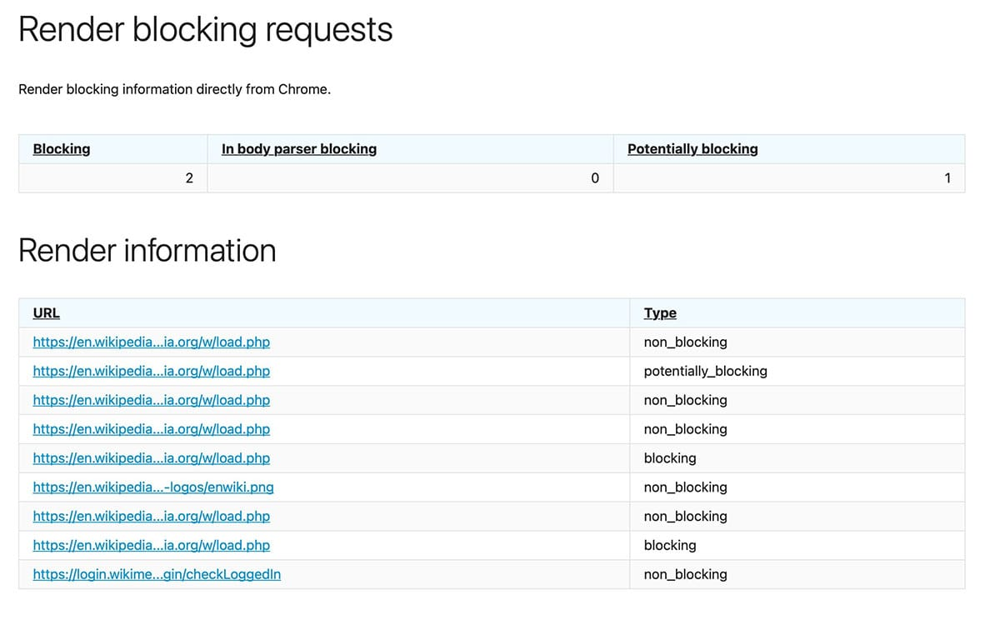
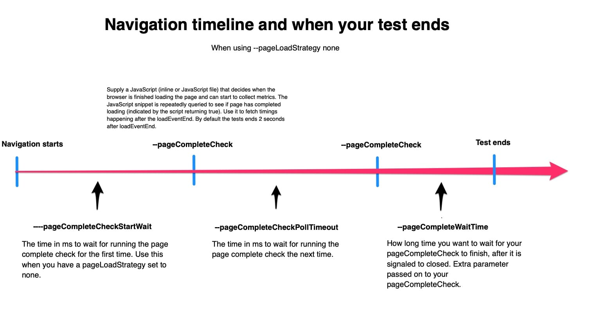
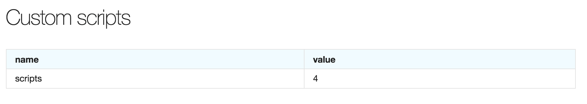
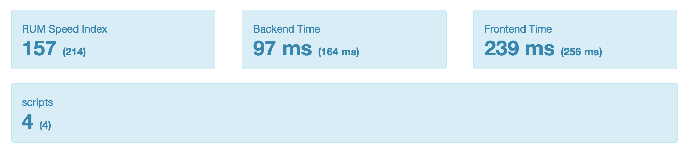

<!DOCTYPE html><html lang="en"><head><meta charset="utf-8"><title>Use Firefox, Chrome, Edge, Safari or Chrome/Firefox on Android to collect metrics.</title><meta name="viewport" content="width=device-width, initial-scale=1.0"><meta name="description" content="You can use Firefox, Chrome, Ende, Safari and Chrome/Firefox on Android to collect metrics. You need make sure you have a set connectivity when you test, and you do that with Docker networks or throttle."><meta name="keywords" content="browsers, documentation, sitespeed.io, Firefox, Chrome, Safari"><meta name="theme-color" content="#0095d2"><link rel="canonical" href="index.html" /><meta name="twitter:card" content="summary"><meta name="twitter:site" content="@sitespeedio"><meta name="twitter:creator" content="@sitespeedio"><meta name="twitter:url" content="/documentation/sitespeed.io/browsers/"><meta name="twitter:title" content="Use Firefox, Chrome, Edge, Safari or Chrome/Firefox on Android to c..."><meta name="twitter:description" content="You can use Firefox, Safari, Chrome, Edge and Chrome/Firefox on Android to collect metrics."><meta name="twitter:image" content="https://www.sitespeed.io/img/sitespeed-2.0-twitter.png"><meta property="og:image" content="/img/sitespeed.io-400x400.png"><meta property="og:title" content="Use Firefox, Chrome, Edge, Safari or Chrome/Firefox on Android to collect metrics."><meta property="og:url" content="/documentation/sitespeed.io/browsers/"><meta property="og:site_name" content="Sitespeed.io - How speedy is your website"><meta property="og:description" content="You can use Firefox, Chrome, Ende, Safari and Chrome/Firefox on Android to collect metrics. You need make sure you have a set connectivity when you test, and you do that with Docker networks or thr..."><link rel="apple-touch-icon-precomposed" sizes="144x144" href="../../../img/ico/sitespeed.io-144.png"><link rel="apple-touch-icon-precomposed" sizes="114x114" href="https://www.sitespeed.io/img/ico/sitespeed.io-114.png"><link rel="apple-touch-icon-precomposed" sizes="72x72" href="https://www.sitespeed.io/img/ico/sitespeed.io-72.png"><link rel="apple-touch-icon-precomposed" href="https://www.sitespeed.io/img/ico/sitespeed.io-57.png"><link rel="shortcut icon" href="../../../img/ico/sitespeed.io.ico"><link type="application/atom+xml" href="https://www.sitespeed.io/feed/blog.xml" rel="alternate" /><style> /*! normalize.css v7.0.0 | MIT License | github.com/necolas/normalize.css */ /* Document ========================================================================== */ /** * 1. Correct the line height in all browsers. * 2. Prevent adjustments of font size after orientation changes in * IE on Windows Phone and in iOS. */ html { line-height: 1.15; /* 1 */ -ms-text-size-adjust: 100%; /* 2 */ -webkit-text-size-adjust: 100%; /* 2 */ } /* Sections ========================================================================== */ /** * Remove the margin in all browsers (opinionated). */ body { margin: 0; } /** * Add the correct display in IE 9-. */ article, aside, footer, header, nav, section { display: block; } /** * Correct the font size and margin on `h1` elements within `section` and * `article` contexts in Chrome, Firefox, and Safari. */ h1 { font-size: 2em; margin: 0.67em 0; } /* Grouping content ========================================================================== */ /** * Add the correct display in IE 9-. * 1. Add the correct display in IE. */ figcaption, figure, main { /* 1 */ display: block; } /** * Add the correct margin in IE 8. */ figure { margin: 1em 40px; } /** * 1. Add the correct box sizing in Firefox. * 2. Show the overflow in Edge and IE. */ hr { box-sizing: content-box; /* 1 */ height: 0; /* 1 */ overflow: visible; /* 2 */ } /** * 1. Correct the inheritance and scaling of font size in all browsers. * 2. Correct the odd `em` font sizing in all browsers. */ pre { font-family: monospace, monospace; /* 1 */ font-size: 1em; /* 2 */ } /* Text-level semantics ========================================================================== */ /** * 1. Remove the gray background on active links in IE 10. * 2. Remove gaps in links underline in iOS 8+ and Safari 8+. */ a { background-color: transparent; /* 1 */ -webkit-text-decoration-skip: objects; /* 2 */ } /** * 1. Remove the bottom border in Chrome 57- and Firefox 39-. * 2. Add the correct text decoration in Chrome, Edge, IE, Opera, and Safari. */ abbr[title] { border-bottom: none; /* 1 */ text-decoration: underline; /* 2 */ text-decoration: underline dotted; /* 2 */ } /** * Prevent the duplicate application of `bolder` by the next rule in Safari 6. */ b, strong { font-weight: inherit; } /** * Add the correct font weight in Chrome, Edge, and Safari. */ b, strong { font-weight: bolder; } /** * 1. Correct the inheritance and scaling of font size in all browsers. * 2. Correct the odd `em` font sizing in all browsers. */ code, kbd, samp { font-family: monospace, monospace; /* 1 */ font-size: 1em; /* 2 */ } /** * Add the correct font style in Android 4.3-. */ dfn { font-style: italic; } /** * Add the correct background and color in IE 9-. */ mark { background-color: #ff0; color: #000; } /** * Add the correct font size in all browsers. */ small { font-size: 80%; } /** * Prevent `sub` and `sup` elements from affecting the line height in * all browsers. */ sub, sup { font-size: 75%; line-height: 0; position: relative; vertical-align: baseline; } sub { bottom: -0.25em; } sup { top: -0.5em; } /* Embedded content ========================================================================== */ /** * Add the correct display in IE 9-. */ audio, video { display: inline-block; } /** * Add the correct display in iOS 4-7. */ audio:not([controls]) { display: none; height: 0; } /** * Remove the border on images inside links in IE 10-. */ img { border-style: none; } /** * Hide the overflow in IE. */ svg:not(:root) { overflow: hidden; } /* Forms ========================================================================== */ /** * 1. Change the font styles in all browsers (opinionated). * 2. Remove the margin in Firefox and Safari. */ button, input, optgroup, select, textarea { font-family: sans-serif; /* 1 */ font-size: 100%; /* 1 */ line-height: 1.15; /* 1 */ margin: 0; /* 2 */ } /** * Show the overflow in IE. * 1. Show the overflow in Edge. */ button, input { /* 1 */ overflow: visible; } /** * Remove the inheritance of text transform in Edge, Firefox, and IE. * 1. Remove the inheritance of text transform in Firefox. */ button, select { /* 1 */ text-transform: none; } /** * 1. Prevent a WebKit bug where (2) destroys native `audio` and `video` * controls in Android 4. * 2. Correct the inability to style clickable types in iOS and Safari. */ button, html [type="button"], /* 1 */ [type="reset"], [type="submit"] { -webkit-appearance: button; /* 2 */ } /** * Remove the inner border and padding in Firefox. */ button::-moz-focus-inner, [type="button"]::-moz-focus-inner, [type="reset"]::-moz-focus-inner, [type="submit"]::-moz-focus-inner { border-style: none; padding: 0; } /** * Restore the focus styles unset by the previous rule. */ button:-moz-focusring, [type="button"]:-moz-focusring, [type="reset"]:-moz-focusring, [type="submit"]:-moz-focusring { outline: 1px dotted ButtonText; } /** * Correct the padding in Firefox. */ fieldset { padding: 0.35em 0.75em 0.625em; } /** * 1. Correct the text wrapping in Edge and IE. * 2. Correct the color inheritance from `fieldset` elements in IE. * 3. Remove the padding so developers are not caught out when they zero out * `fieldset` elements in all browsers. */ legend { box-sizing: border-box; /* 1 */ color: inherit; /* 2 */ display: table; /* 1 */ max-width: 100%; /* 1 */ padding: 0; /* 3 */ white-space: normal; /* 1 */ } /** * 1. Add the correct display in IE 9-. * 2. Add the correct vertical alignment in Chrome, Firefox, and Opera. */ progress { display: inline-block; /* 1 */ vertical-align: baseline; /* 2 */ } /** * Remove the default vertical scrollbar in IE. */ textarea { overflow: auto; } /** * 1. Add the correct box sizing in IE 10-. * 2. Remove the padding in IE 10-. */ [type="checkbox"], [type="radio"] { box-sizing: border-box; /* 1 */ padding: 0; /* 2 */ } /** * Correct the cursor style of increment and decrement buttons in Chrome. */ [type="number"]::-webkit-inner-spin-button, [type="number"]::-webkit-outer-spin-button { height: auto; } /** * 1. Correct the odd appearance in Chrome and Safari. * 2. Correct the outline style in Safari. */ [type="search"] { -webkit-appearance: textfield; /* 1 */ outline-offset: -2px; /* 2 */ } /** * Remove the inner padding and cancel buttons in Chrome and Safari on macOS. */ [type="search"]::-webkit-search-cancel-button, [type="search"]::-webkit-search-decoration { -webkit-appearance: none; } /** * 1. Correct the inability to style clickable types in iOS and Safari. * 2. Change font properties to `inherit` in Safari. */ ::-webkit-file-upload-button { -webkit-appearance: button; /* 1 */ font: inherit; /* 2 */ } /* Interactive ========================================================================== */ /* * Add the correct display in IE 9-. * 1. Add the correct display in Edge, IE, and Firefox. */ details, /* 1 */ menu { display: block; } /* * Add the correct display in all browsers. */ summary { display: list-item; } /* Scripting ========================================================================== */ /** * Add the correct display in IE 9-. */ canvas { display: inline-block; } /** * Add the correct display in IE. */ template { display: none; } /* Hidden ========================================================================== */ /** * Add the correct display in IE 10-. */ [hidden] { display: none; } /* Simple Grid Project Page - http://thisisdallas.github.com/Simple-Grid/ */ *, *:after, *:before { -webkit-box-sizing: border-box; -moz-box-sizing: border-box; box-sizing: border-box; } body { margin: 0px; } [class*='col-'] { float: left; padding-right: 20px; padding-left: 20px; } .grid { width: 100%; max-width: 1140px; min-width: 755px; margin: 0 auto; overflow: hidden; } .grid:after { content: ""; display: table; clear: both; } .grid-pad { padding-top: 20px; padding-left: 20px; padding-right: 0px; } .push-right { float: right; } .col-1-1 { width: 100%; } .col-2-3, .col-8-12 { width: 66.66%; } .col-1-2, .col-6-12 { width: 50%; } .col-1-3, .col-4-12 { width: 33.33%; } .col-1-4, .col-3-12 { width: 25%; } .col-1-5 { width: 20%; } .col-1-6, .col-2-12 { width: 16.667%; } .col-1-7 { width: 14.28%; } .col-1-8 { width: 12.5%; } .col-1-9 { width: 11.1%; } .col-1-10 { width: 10%; } .col-1-11 { width: 9.09%; } .col-1-12 { width: 8.33% } .col-11-12 { width: 91.66% } .col-10-12 { width: 83.333%; } .col-9-12 { width: 75%; } .col-5-12 { width: 41.66%; } .col-7-12 { width: 58.33% } .push-2-3, .push-8-12 { margin-left: 66.66%; } .push-1-2, .push-6-12 { margin-left: 50%; } .push-1-3, .push-4-12 { margin-left: 33.33%; } .push-1-4, .push-3-12 { margin-left: 25%; } .push-1-5 { margin-left: 20%; } .push-1-6, .push-2-12 { margin-left: 16.667%; } .push-1-7 { margin-left: 14.28%; } .push-1-8 { margin-left: 12.5%; } .push-1-9 { margin-left: 11.1%; } .push-1-10 { margin-left: 10%; } .push-1-11 { margin-left: 9.09%; } .push-1-12 { margin-left: 8.33% } @media handheld, only screen and (max-width: 767px) { .grid { width: 100%; min-width: 0; margin-left: 0px; margin-right: 0px; padding-left: 20px; padding-right: 10px; } [class*='col-'] { width: auto; float: none; margin-left: 0px; margin-right: 0px; margin-top: 10px; margin-bottom: 10px; padding-left: 0px; padding-right: 10px; } [class*='mobile-col-'] { float: left; margin-left: 0px; margin-right: 0px; margin-top: 0px; margin-bottom: 10px; padding-left: 0px; padding-right: 10px; padding-bottom: 0px; } .mobile-col-1-1 { width: 100%; } .mobile-col-2-3, .mobile-col-8-12 { width: 66.66%; } .mobile-col-1-2, .mobile-col-6-12 { width: 50%; } .mobile-col-1-3, .mobile-col-4-12 { width: 33.33%; } .mobile-col-1-4, .mobile-col-3-12 { width: 25%; } .mobile-col-1-5 { width: 20%; } .mobile-col-1-6, .mobile-col-2-12 { width: 16.667%; } .mobile-col-1-7 { width: 14.28%; } .mobile-col-1-8 { width: 12.5%; } .mobile-col-1-9 { width: 11.1%; } .mobile-col-1-10 { width: 10%; } .mobile-col-1-11 { width: 9.09%; } .mobile-col-1-12 { width: 8.33% } .mobile-col-11-12 { width: 91.66% } .mobile-col-10-12 { width: 83.333%; } .mobile-col-9-12 { width: 75%; } .mobile-col-5-12 { width: 41.66%; } .mobile-col-7-12 { width: 58.33% } .hide-on-mobile { display: none !important; width: 0; height: 0; } } body { margin: 0; padding: 0; background: #fff; font-family: Tahoma, Verdana,sans-serif; font-size: 19px; line-height: 1.618em; word-wrap: break-word; background-color: #e1f6fd; } .nav { background: #0095d2; } .nav ul { list-style: none; text-align: center; padding: 0; margin: 0; background-color: #0095d2; } .nav li { font-size: 1em; line-height: 40px; height: 40px; border-bottom: 1px solid #0073b0; } .nav a { text-decoration: none; color: #fff; display: block; } .nav a:hover { background-color: #0073b0; } .nav a.active { background-color: #0073b0; color: #fff; cursor: default; } .logo { text-align: center; background-color: #0095d2; } .navbar-brand { padding: 0px 0px; font-size: 18px; max-width: 250px; } .nav li ul { position: absolute; display: none; width: inherit; } @media screen and (min-width: 820px) { body { padding-top: 50px; } .nav { height: 50px; width: 100%; z-index: 1000; position: fixed; top: 0; } .navbar-brand { padding: 0px 0px; font-size: 18px; float: left; max-width: 250px; } .nav a { padding-left: 20px; padding-right: 20px; } .nav { top: 0; background-color: #0095d2; } .nav li { border-bottom: none; height: 50px; line-height: 50px; font-size: 1em; float: left; display: inline-block; margin-right: 0px; } .nav a { text-decoration: none; color: #fff; display: block; } .nav a:hover { text-decoration: none; } .nav ul { list-style: none; text-align: center; padding: 0; margin: 0; background-color: #0095d2; } /* Sub Menus */ .nav li ul { position: absolute; display: none; width: inherit; } .nav li:hover ul { display: block; } .nav li ul li { display: block; float: none; } /* Fix for fixed navigation and links */ :target:before { content:""; display:block; height:50px; /* fixed header height*/ margin:-50px 0 0; /* negative fixed header height */ } } body { font-family: -apple-system, BlinkMacSystemFont, "Segoe UI", Roboto, Oxygen-Sans, Ubuntu, Cantarell, "Helvetica Neue", sans-serif; } h1, h2, h3, h4, h5, h6 { margin-top: 1rem; margin-bottom: 2rem; font-weight: 400; } h1 { font-size: 3rem; line-height: 1.2; } h2 { font-size: 2.5rem; line-height: 1.25; } h3 { font-size: 2rem; line-height: 1.3; } h4 { font-size: 1.5rem; line-height: 1.35; } h5 { font-size: 1.25rem; line-height: 1.5; } h6 { font-size: 1.1rem; line-height: 1.6; letter-spacing: 0; } .white { background-color: #ffffff; } .lightblue { background-color: #e1e4fd; padding-bottom: 20px; } .copy { padding-top: 20px; } .flogo { padding-top: 10px; } footer h3 { margin-bottom: 10px; font-size: 1.2rem; line-height: 1.3; } .pull-left { float: left !important; } .pull-right { float: right !important; } .img-big { margin-right: 20px; } .img-footer { margin-top: 15px; } .middle { vertical-align: middle; width: 32px; } .edit { float: right; font-size: 0.8rem; line-height: 1; letter-spacing: 0; padding: 5px; } .digitalocean { vertical-align: middle; height: 26px; } hr { margin-top: 20px; margin-bottom: 20px; border: 0; border-top: 1px solid #eee; box-sizing: content-box; height: 0; } footer p { text-align: center; margin: 0; } a { color: #0073b0; cursor: pointer; text-decoration: none; } a:hover { cursor: pointer; text-decoration: underline; } code { font-size: 16px; background-color: #f5f2f0; } pre code { display: block; padding: 6px; } /* code { background-color: #eee; padding: 2px; } # pre code { display: block; padding: 9.5px; margin: 0 0 10px; font-size: 13px; line-height: 1.428571429; word-break: break-all; word-wrap: break-word; color: #333; background-color: #f5f5f5; border: 1px solid #ccc; border-radius: 4px; font-family: Monaco,Menlo,Consolas,"Courier New",monospace; white-space: pre-wrap; } */ .language-bash code:before { content: "$ "; } .note-info { background-color: #f0f7fd; border-color: #d0e3f0; } .note { margin: 20px 0; padding: 15px 30px 15px 15px; border-left: 10px solid #eee; } .note-warning { background-color: #fcf2f2; border-color: #dfb5b4; } .reproducable { margin: 20px 0; padding: 10px; background-color: #a0ef5b; border-color: #a0ef5b; } .img-thumbnail img { padding: 4px; line-height: 1.428571429; background-color: #fff; border: 1px solid #ddd; border-radius: 4px; -webkit-transition: all 0.2s ease-in-out; transition: all 0.2s ease-in-out; display: inline-block; max-width: 100%; height: auto; } .img-thumbnail-center { text-align: center; margin-bottom: 4px; } .img-thumbnail-center img { max-width: 500px; width: 100%; padding: 4px; line-height: 1.428571429; background-color: #fff; border: 1px solid #ddd; border-radius: 4px; -webkit-transition: all 0.2s ease-in-out; transition: all 0.2s ease-in-out; display: inline-block; height: auto; } .small { font-size: 0.8em; line-height: 1.2em; } .image-info { text-align: center; margin-top: 0px; } footer ul { list-style: none; padding: 0; margin: 0; } footer li { padding-bottom: 4px; } footer a { color: #0073b0; } a btn { margin-top: 10px; } .photo { border-radius: 10px; margin-right: 20px; margin-bottom: 10px; } .language-help { overflow: auto; word-wrap: normal; white-space: pre; } @media screen and (max-width: 820px) { .small { text-align: center; font-size: 19px; } h1 { line-height: 1em; } ul { padding-left: 10px; margin-left: 10px; } } .video-container { position: relative; padding-bottom: 56.25%; padding-top: 30px; height: 0; overflow: hidden; margin-right: 5%; margin-left: 5%; } .video-container iframe, .video-container object, .video-container embed { position: absolute; top: 0; left: 0; width: 100%; height: 100%; } blockquote { background: #f9f9f9; border-left: 10px solid #03c9a9; margin: 1.5em 10px; padding: 10px; } blockquote:before { font-family: georgia; color: #6c7a89; content: open-quote; font-size: 60px; /* how to fix the quote position*/ line-height: 0.1em; vertical-align: -0.4em; } blockquote p { display: inline; letter-spacing: 1px; } blockquote span { display: block; margin-top: 10px; margin-left: 10px; font-size: 15px; font-style: italic; } blockquote span:before { content: "-"; margin-right: 3px; } #upgradeTable { overflow-x: auto; } .input-field { font-size: 25px; margin: 30px auto 0; display: block; border: solid 1px #000000; border-radius: 4px; padding: 10px 20px; } .red { color: red; } .anchor { font-size: 80%; color: grey; } .king img:hover { /* Start the shake animation and make the animation last for 0.5 seconds */ animation: shake 0.5s; /* When the animation is finished, start again */ animation-iteration-count: infinite; } @keyframes shake { 0% { transform: translate(1px, 1px) rotate(0deg); } 10% { transform: translate(-1px, -2px) rotate(-1deg); } 20% { transform: translate(-3px, 0px) rotate(1deg); } 30% { transform: translate(3px, 2px) rotate(0deg); } 40% { transform: translate(1px, -1px) rotate(1deg); } 50% { transform: translate(-1px, 2px) rotate(-1deg); } 60% { transform: translate(-3px, 1px) rotate(0deg); } 70% { transform: translate(3px, 1px) rotate(-1deg); } 80% { transform: translate(-1px, -1px) rotate(1deg); } 90% { transform: translate(1px, 2px) rotate(0deg); } 100% { transform: translate(1px, -2px) rotate(-1deg); } } .youtube-player { position: relative; padding-bottom: 56.23%; /* Use 75% for 4:3 videos */ height: 0; overflow: hidden; max-width: 800px; background: #000; text-align: center; margin: 5px auto; } .youtube-player iframe { position: absolute; top: 0; left: 0; width: 100%; height: 100%; z-index: 100; background: transparent; } .youtube-player img { bottom: 0; display: block; left: 0; margin: auto; max-width: 100%; width: 100%; position: absolute; right: 0; top: 0; border: none; height: auto; cursor: pointer; -webkit-transition: .4s all; -moz-transition: .4s all; transition: .4s all; } .youtube-player img:hover { -webkit-filter: brightness(75%); } .youtube-player .play { height: 72px; width: 72px; left: 50%; top: 50%; margin-left: -36px; margin-top: -36px; position: absolute; background: url("../../../img/playbutton.png") no-repeat; cursor: pointer; }</style><link rel="stylesheet" href="../../../css/prism-1.15.css"> <script type="text/javascript">/* Thanks Nic Jansma https://github.com/nicjansma/usertiming.js */ /*! usertiming v0.1.6 */ !function(a){"use strict";"undefined"==typeof a&&(a={}),"undefined"==typeof a.performance&&(a.performance={}),a._perfRefForUserTimingPolyfill=a.performance,a.performance.userTimingJsNow=!1,a.performance.userTimingJsNowPrefixed=!1,a.performance.userTimingJsUserTiming=!1,a.performance.userTimingJsUserTimingPrefixed=!1,a.performance.userTimingJsPerformanceTimeline=!1,a.performance.userTimingJsPerformanceTimelinePrefixed=!1;var b,c,d=[],e=[],f=null;if("function"!=typeof a.performance.now){for(a.performance.userTimingJsNow=!0,e=["webkitNow","msNow","mozNow"],b=0;b<e.length;b++)if("function"==typeof a.performance[e[b]]){a.performance.now=a.performance[e[b]],a.performance.userTimingJsNowPrefixed=!0;break}var g=+new Date;a.performance.timing&&a.performance.timing.navigationStart&&(g=a.performance.timing.navigationStart),"function"!=typeof a.performance.now&&(a.performance.now=Date.now?function(){return Date.now()-g}:function(){return+new Date-g})}var h=function(){},i=function(){},j=[],k=!1,l=!1;if("function"!=typeof a.performance.getEntries||"function"!=typeof a.performance.mark){for("function"==typeof a.performance.getEntries&&"function"!=typeof a.performance.mark&&(l=!0),a.performance.userTimingJsPerformanceTimeline=!0,d=["webkit","moz"],e=["getEntries","getEntriesByName","getEntriesByType"],b=0;b<e.length;b++)for(c=0;c<d.length;c++)f=d[c]+e[b].substr(0,1).toUpperCase()+e[b].substr(1),"function"==typeof a.performance[f]&&(a.performance[e[b]]=a.performance[f],a.performance.userTimingJsPerformanceTimelinePrefixed=!0);h=function(a){j.push(a),"measure"===a.entryType&&(k=!0)};var m=function(){k&&(j.sort(function(a,b){return a.startTime-b.startTime}),k=!1)};if(i=function(a,c){for(b=0;b<j.length;)j[b].entryType===a&&("undefined"==typeof c||j[b].name===c)?j.splice(b,1):b++},"function"!=typeof a.performance.getEntries||l){var n=a.performance.getEntries;a.performance.getEntries=function(){m();var b=j.slice(0);return l&&n&&(Array.prototype.push.apply(b,n.call(a.performance)),b.sort(function(a,b){return a.startTime-b.startTime})),b}}if("function"!=typeof a.performance.getEntriesByType||l){var o=a.performance.getEntriesByType;a.performance.getEntriesByType=function(c){if("undefined"==typeof c||"mark"!==c&&"measure"!==c)return l&&o?o.call(a.performance,c):[];"measure"===c&&m();var d=[];for(b=0;b<j.length;b++)j[b].entryType===c&&d.push(j[b]);return d}}if("function"!=typeof a.performance.getEntriesByName||l){var p=a.performance.getEntriesByName;a.performance.getEntriesByName=function(c,d){if(d&&"mark"!==d&&"measure"!==d)return l&&p?p.call(a.performance,c,d):[];"undefined"!=typeof d&&"measure"===d&&m();var e=[];for(b=0;b<j.length;b++)("undefined"==typeof d||j[b].entryType===d)&&j[b].name===c&&e.push(j[b]);return l&&p&&(Array.prototype.push.apply(e,p.call(a.performance,c,d)),e.sort(function(a,b){return a.startTime-b.startTime})),e}}}if("function"!=typeof a.performance.mark){for(a.performance.userTimingJsUserTiming=!0,d=["webkit","moz","ms"],e=["mark","measure","clearMarks","clearMeasures"],b=0;b<e.length;b++)for(c=0;c<d.length;c++)f=d[c]+e[b].substr(0,1).toUpperCase()+e[b].substr(1),"function"==typeof a.performance[f]&&(a.performance[e[b]]=a.performance[f],a.performance.userTimingJsUserTimingPrefixed=!0);var q={};"function"!=typeof a.performance.mark&&(a.performance.mark=function(b){var c=a.performance.now();if("undefined"==typeof b)throw new SyntaxError("Mark name must be specified");if(a.performance.timing&&b in a.performance.timing)throw new SyntaxError("Mark name is not allowed");q[b]||(q[b]=[]),q[b].push(c),h({entryType:"mark",name:b,startTime:c,duration:0})}),"function"!=typeof a.performance.clearMarks&&(a.performance.clearMarks=function(a){a?q[a]=[]:q={},i("mark",a)}),"function"!=typeof a.performance.measure&&(a.performance.measure=function(b,c,d){var e=a.performance.now();if("undefined"==typeof b)throw new SyntaxError("Measure must be specified");if(!c)return void h({entryType:"measure",name:b,startTime:0,duration:e});var f=0;if(a.performance.timing&&c in a.performance.timing){if("navigationStart"!==c&&0===a.performance.timing[c])throw new Error(c+" has a timing of 0");f=a.performance.timing[c]-a.performance.timing.navigationStart}else{if(!(c in q))throw new Error(c+" mark not found");f=q[c][q[c].length-1]}var g=e;if(d)if(g=0,a.performance.timing&&d in a.performance.timing){if("navigationStart"!==d&&0===a.performance.timing[d])throw new Error(d+" has a timing of 0");g=a.performance.timing[d]-a.performance.timing.navigationStart}else{if(!(d in q))throw new Error(d+" mark not found");g=q[d][q[d].length-1]}var i=g-f;h({entryType:"measure",name:b,startTime:f,duration:i})}),"function"!=typeof a.performance.clearMeasures&&(a.performance.clearMeasures=function(a){i("measure",a)})}"undefined"!=typeof define&&define.amd?define([],function(){return a.performance}):"undefined"!=typeof module&&"undefined"!=typeof module.exports&&(module.exports=a.performance)}("undefined"!=typeof window?window:void 0); </script> <script src="../../../js/clipboard-2.0.4.min.js" defer></script> <script src="../../../js/prism-1.15.js" defer></script><body><nav role="navigation"><div class="darkblue nav"><div class="grid"><div class="col-1-1"><div class="logo"> <a href="https://www.sitespeed.io/"></a></div><ul><li> <a href="https://www.sitespeed.io/" >Start</a><li> <a href="../../index.html" class="active" >Documentation</a><ul><li><a href="../index.html">sitespeed.io</a><li><a href="../../browsertime/index.html">Browsertime</a><li><a href="../../onlinetest/index.html">OnlineTest</a><li><a href="../../throttle/index.html">Throttle</a><li><a href="../../coach/index.html">Coach</a><li><a href="../../pagexray/index.html">PageXray</a><li><a href="../../humble/index.html">Humble</a><li><a href="../../compare/index.html">Compare</a><li><a href="../../chrome-har/index.html">Chrome HAR</a></ul><li> <a href="https://www.sitespeed.io/support/" >Support</a><li> <a href="https://www.sitespeed.io/examples/" >Examples</a><li> <a href="https://www.sitespeed.io/blog/" >Blog</a><li> <a href="https://www.sitespeed.io/video/" >Videos</a><li> <a href="https://www.sitespeed.io/search/" >Search</a></ul></div></div></div></nav><script> if (window.performance && window.performance.mark) { window.performance.mark('userTimingHeader'); } </script><div class="white"><div class="grid"><div class="col-1-1"><main role="main"><p><a href="../index.html">Documentation</a> / Browsers<h1 class="no_toc" id="browsers"> Browsers</h1><ul id="markdown-toc"><li><a href="index.html#firefox" id="markdown-toc-firefox">Firefox</a><ul><li><a href="index.html#firefox-profile-setup" id="markdown-toc-firefox-profile-setup">Firefox profile setup</a><li><a href="index.html#collecting-the-har" id="markdown-toc-collecting-the-har">Collecting the HAR</a><ul><li><a href="index.html#what-to-include-in-the-har" id="markdown-toc-what-to-include-in-the-har">What to include in the HAR</a></ul><li><a href="index.html#choosing-firefox-version" id="markdown-toc-choosing-firefox-version">Choosing Firefox version</a><li><a href="index.html#set-your-own-firefox-preferences" id="markdown-toc-set-your-own-firefox-preferences">Set your own Firefox preferences</a><li><a href="index.html#collect-the-moz-http-log" id="markdown-toc-collect-the-moz-http-log">Collect the MOZ HTTP log</a><li><a href="index.html#accept-insecure-certificates" id="markdown-toc-accept-insecure-certificates">Accept insecure certificates</a><li><a href="index.html#collect-cpu-profile" id="markdown-toc-collect-cpu-profile">Collect CPU profile</a><li><a href="index.html#record-video" id="markdown-toc-record-video">Record video</a><li><a href="index.html#run-firefox-on-android" id="markdown-toc-run-firefox-on-android">Run Firefox on Android</a><li><a href="index.html#add-extra-command-line-arguments-to-firefox" id="markdown-toc-add-extra-command-line-arguments-to-firefox">Add extra command line arguments to Firefox</a><li><a href="index.html#more-memory" id="markdown-toc-more-memory">More memory</a></ul><li><a href="index.html#chrome" id="markdown-toc-chrome">Chrome</a><ul><li><a href="index.html#chrome-setup" id="markdown-toc-chrome-setup">Chrome setup</a><li><a href="index.html#add-your-own-chrome-args" id="markdown-toc-add-your-own-chrome-args">Add your own Chrome args</a><li><a href="index.html#collect-trace-logs" id="markdown-toc-collect-trace-logs">Collect trace logs</a><li><a href="index.html#collect-the-console-log" id="markdown-toc-collect-the-console-log">Collect the console log</a><li><a href="index.html#collect-the-net-log" id="markdown-toc-collect-the-net-log">Collect the net log</a><li><a href="index.html#render-blocking-information" id="markdown-toc-render-blocking-information">Render blocking information</a><li><a href="index.html#choosing-chrome-version" id="markdown-toc-choosing-chrome-version">Choosing Chrome version</a><li><a href="index.html#use-a-newer-version-of-chromedriver" id="markdown-toc-use-a-newer-version-of-chromedriver">Use a newer version of ChromeDriver</a></ul><li><a href="index.html#safari" id="markdown-toc-safari">Safari</a><ul><li><a href="index.html#limitations" id="markdown-toc-limitations">Limitations</a><li><a href="index.html#configuration" id="markdown-toc-configuration">Configuration</a><ul><li><a href="index.html#run-on-ios" id="markdown-toc-run-on-ios">Run on iOS</a><li><a href="index.html#choose-which-device" id="markdown-toc-choose-which-device">Choose which device</a><li><a href="index.html#use-safari-technology-preview" id="markdown-toc-use-safari-technology-preview">Use Safari Technology Preview</a></ul><li><a href="index.html#diagnose-problems" id="markdown-toc-diagnose-problems">Diagnose problems</a></ul><li><a href="index.html#edge" id="markdown-toc-edge">Edge</a><li><a href="index.html#brave" id="markdown-toc-brave">Brave</a><li><a href="index.html#choose-when-to-end-your-test" id="markdown-toc-choose-when-to-end-your-test">Choose when to end your test</a><li><a href="index.html#custom-metrics" id="markdown-toc-custom-metrics">Custom metrics</a><li><a href="index.html#visual-metrics" id="markdown-toc-visual-metrics">Visual Metrics</a><li><a href="index.html#using-browsertime" id="markdown-toc-using-browsertime">Using Browsertime</a><li><a href="index.html#tcpdump" id="markdown-toc-tcpdump">TCPDump</a><li><a href="index.html#webdriver" id="markdown-toc-webdriver">WebDriver</a><li><a href="index.html#navigation-and-how-we-run-the-test" id="markdown-toc-navigation-and-how-we-run-the-test">Navigation and how we run the test</a><li><a href="index.html#how-can-i-disable-http2-i-only-want-to-test-http1x" id="markdown-toc-how-can-i-disable-http2-i-only-want-to-test-http1x">How can I disable HTTP/2 (I only want to test HTTP/1.x)?</a><li><a href="index.html#how-does-it-work-behind-the-scene" id="markdown-toc-how-does-it-work-behind-the-scene">How does it work behind the scene?</a></ul><p>You can fetch timings, run your own JavaScript and record a video of the screen. The following browsers are supported: Firefox, Safari, Edge, Chrome, Chrome and Firefox on Android and Safari on iOS. If you run our Docker containers, we always update them when we tested the latest stable release of Chrome and Firefox. Safari and Safari on iOS needs Mac OS X Catalina. Edge need the corresponding MSEdgeDriver.<h2 id="firefox"> Firefox <a href="index.html#firefox" class="anchor">#</a></h2><p>The latest version of Firefox should work out of the box except if you are on Linux and run Snap installed Firefox, then you need to <a href="https://github.com/mozilla/geckodriver/releases/tag/v0.31.0">follow the workaround</a> by setting a TMPDIR that Geckodriver and Firefox will use.<h3 id="firefox-profile-setup"> Firefox profile setup <a href="index.html#firefox-profile-setup" class="anchor">#</a></h3><p>At the moment we setup a new profile for each run the browser do. We set up the profiles preferences like <a href="https://github.com/sitespeedio/browsertime/blob/main/lib/firefox/settings/firefoxPreferences.js">this</a>. We use Mozillas <a href="https://searchfox.org/mozilla-central/source/testing/talos/talos/config.py">own configuration</a> as default with some changes + some extra configuration for performance and privacy.<p>We try to disable all Firefox ping home:<ul><li>We disable <a href="https://wiki.mozilla.org/Firefox/Shield/Heartbeat">heartbeat</a>.<li>We disable the call to detectportal.firefox.com.<li>We turn off <a href="https://wiki.mozilla.org/Telemetry/Testing">telemetry</a>.<li>We turn on the call home for <a href="https://support.mozilla.org/en-US/kb/how-stop-firefox-making-automatic-connections">safebrowsing</a>.</ul><p>For performance and deterministic reasons we disable the <a href="https://wiki.mozilla.org/Security/Tracking_protection">Tracking protection</a>. The problem with the current implementation of the Tracking protection is that it calls home (during a page load) to download the latest blacklist for scripts that should be disabled.<p>You can also <a href="index.html#set-your-own-firefox-preferences">configure your own preferences</a> for the profile.<p>You can setup your own profile with <code>--firefox.profileTemplate</code> with a profile template directory that will be cloned and used as the base of each profile each instance of Firefox is launched against.<h3 id="collecting-the-har"> Collecting the HAR <a href="index.html#collecting-the-har" class="anchor">#</a></h3><p>To collect the HAR from Firefox we use <a href="https://github.com/devtools-html/har-export-trigger">HAR Export trigger</a>.<p>If you for some reason don’t need the HAR you can disable it by <code>--browsertime.skipHar</code>.<h4 id="what-to-include-in-the-har"> What to include in the HAR <a href="index.html#what-to-include-in-the-har" class="anchor">#</a></h4><p>If you use Firefox you can choose to include response bodies in the HAR file. The HAR file will be larger but it can make things easier to debug on your site.<p>You can choose what do include by <code>--firefox.includeResponseBodies</code> and choose between <strong>none</strong> (default) , <strong>all</strong> (all response bodies for the type text/JS/CSS or <strong>html</strong> (only save the body of the HTML response).<h3 id="choosing-firefox-version"> Choosing Firefox version <a href="index.html#choosing-firefox-version" class="anchor">#</a></h3><p>Running Firefox on Mac OS X you can choose what version to run with sitespeed.io:<p><code>--firefox</code> will use stable, <code>--firefox.nightly</code>, <code>--firefox.beta</code> or <code>--firefox.developer</code> will choose between the others. Remember that you need to install them first before you use them :)<p>If you run on Linux you need to set the full path to the binary: <code>--firefox.binaryPath</code><h3 id="set-your-own-firefox-preferences"> Set your own Firefox preferences <a href="index.html#set-your-own-firefox-preferences" class="anchor">#</a></h3><p>Firefox preferences are all the preferences that you can set on your Firefox instance using <strong>about:config</strong>. Since we start with a fresh profile (except some <a href="index.html#firefox-profile-setup">defaults</a>) of Firefox for each page load, we are not reusing the setup you have in your Firefox instance.<p>You set a preference by adding <code>--firefox.preference</code> with the format <strong>key:value</strong>. If you want to add multiple preferences, repeat <code>--firefox.preference</code> once per argument.<h3 id="collect-the-moz-http-log"> Collect the MOZ HTTP log <a href="index.html#collect-the-moz-http-log" class="anchor">#</a></h3><p>You can turn on <a href="https://developer.mozilla.org/en-US/docs/Mozilla/Debugging/HTTP_logging">Firefox HTTP log</a> by adding <code>--firefox.collectMozLog</code> to your run. That can be useful if you want to file upstream issues to Mozilla.<p>It is setup with <code>timestamp,nsHttp:5,cache2:5,nsSocketTransport:5,nsHostResolver:5</code> and will create one HTTP log file per run.<h3 id="accept-insecure-certificates"> Accept insecure certificates <a href="index.html#accept-insecure-certificates" class="anchor">#</a></h3><p>If you want to accept insecure certificates add <code>--firefox.acceptInsecureCerts</code> to your run.<h3 id="collect-cpu-profile"> Collect CPU profile <a href="index.html#collect-cpu-profile" class="anchor">#</a></h3><p>You can collect all the good stuff from Firefox using the new Geckoprofiler. Enable it with <code>--firefox.geckoProfiler</code> and view the profile on <a href="https://profiler.firefox.com">https://profiler.firefox.com</a>. You can configure what to profile with <code>--firefox.geckoProfilerParams.features</code> and <code>--firefox.geckoProfilerParams.threads</code>.<h3 id="record-video"> Record video <a href="index.html#record-video" class="anchor">#</a></h3><p>Firefox has a built in way to record a video of the screen. That way you don’t need to use FFMPEG. Enable it with:<p><code>--firefox.windowRecorder --video</code><h3 id="run-firefox-on-android"> Run Firefox on Android <a href="index.html#run-firefox-on-android" class="anchor">#</a></h3><p>You can run Firefox on Android. If you use stable Firefox on your phone you can add <code>-b firefox --android</code> and it will be used.<h3 id="add-extra-command-line-arguments-to-firefox"> Add extra command line arguments to Firefox <a href="index.html#add-extra-command-line-arguments-to-firefox" class="anchor">#</a></h3><p>If you need to pass on extra command line arguments to the Firefox binary you can do that with <code>--firefox.args</code>.<h3 id="more-memory"> More memory <a href="index.html#more-memory" class="anchor">#</a></h3><p>When you run Firefox in Docker you should use <code>--shm-size 2g</code> to make sure Firefox get enough shared memory (for Chrome we disabled the use of shm with –disable-dev-shm-usage).<pre><code class="language-bash">docker run --shm-size 2g --rm -v "$(pwd):/sitespeed.io" sitespeedio/sitespeed.io:38.6.0 https://www.sitespeed.io -b firefox
</code></pre><h2 id="chrome"> Chrome <a href="index.html#chrome" class="anchor">#</a></h2><p>The latest version of Chrome should work out of the box. Latest version of stable <a href="http://chromedriver.chromium.org">ChromeDriver</a> is bundled in sitespeed.io.<h3 id="chrome-setup"> Chrome setup <a href="index.html#chrome-setup" class="anchor">#</a></h3><p>When we start Chrome it is setup with <a href="https://github.com/sitespeedio/browsertime/blob/main/lib/chrome/webdriver/chromeOptions.js">these</a> command line switches.<h3 id="add-your-own-chrome-args"> Add your own Chrome args <a href="index.html#add-your-own-chrome-args" class="anchor">#</a></h3><p>Chrome has a <a href="https://peter.sh/experiments/chromium-command-line-switches/">long list</a> of command line switches that you can use to make Chrome act differently than the default setup. You can add those switched to Chrome with <code>--chrome.args</code> (repeat the argument if you have multiple arguments).<p>When you add your command line switched you should skip the minus. For example: You want to use <code>--deterministic-fetch</code> then add it like <code>--chrome.args deterministic-fetch</code>.<p>If you want to use it in the configuration file, you can just add each arg in array. Here’s an example for adding Chrome args from sitespeed.io:<pre><code class="language-json">{
    "browsertime": {
        "chrome": {
            "args" : [
                "crash-test",
                "deterministic-fetch"
            ]
        }
    }
}
</code></pre><h3 id="collect-trace-logs"> Collect trace logs <a href="index.html#collect-trace-logs" class="anchor">#</a></h3><p>You can get the trace log from Chrome by adding <code>--chrome.timeline</code>. Doing that you will see how much time the CPU spend in different categories and a trace log file that you can drag and drop into your devtools timeline.<pre><code class="language-bash">docker run --rm -v "$(pwd):/sitespeed.io" sitespeedio/sitespeed.io:38.6.0 --chrome.timeline https://www.sitespeed.io/
</code></pre><p>You can also choose which Chrome trace categories you want to collect by adding <code>--chrome.traceCategories</code> to your parameters.<h3 id="collect-the-console-log"> Collect the console log <a href="index.html#collect-the-console-log" class="anchor">#</a></h3><p>If you use Chrome you can collect everything that is logged to the console. You will see the result in the PageXray tab for each run and if you have errors, the numbers are errors are sent to Graphite/InfluxDB. Collect the console log by adding <code>--chrome.collectConsoleLog</code>.<h3 id="collect-the-net-log"> Collect the net log <a href="index.html#collect-the-net-log" class="anchor">#</a></h3><p>Collect Chromes net log with <code>--chrome.collectNetLog</code>. This is useful if you want to debug exact what happens with Chrome and your web page. You will get one log file per run.<h3 id="render-blocking-information"> Render blocking information <a href="index.html#render-blocking-information" class="anchor">#</a></h3><p>If you use Chrome/Chromium you can get render blocking information (which requests blocks rendering). To get that from sitespeed.io you need to get the Chrome timeline (and we get that by default). But if you wanna make sure to configure it you turn it on with the flag <code>--chrome.timeline</code> or <code>--cpu</code>.<p class="img-thumbnail">You can see the blocking information in the waterfall. Requests that blocks has different coloring. <p class="img-thumbnail">You can also click on the request and see the exact blocking info from Chrome. <p class="img-thumbnail">You can also see a summary on the Page Xray tab and see what kind of blocking information Chrome provides. <h3 id="choosing-chrome-version"> Choosing Chrome version <a href="index.html#choosing-chrome-version" class="anchor">#</a></h3><p>You can choose which version of Chrome you want to run by using the <code>--chrome.binaryPath</code> and the full path to the Chrome binary.<p>Our Docker container only contains one version of Chrome and <a href="https://github.com/sitespeedio/sitespeed.io/issues/new">let us know</a> if you need help to add more versions.<h3 id="use-a-newer-version-of-chromedriver"> Use a newer version of ChromeDriver <a href="index.html#use-a-newer-version-of-chromedriver" class="anchor">#</a></h3><p>ChromeDriver is the driver that handles the communication with Chrome. By default sitespeed.io and Browsertime comes with the ChromeDriver version that matches the Chrome version in the Docker container. If you want to run tests on other Chromedriver versions, you need to download that version of ChromeDriver.<p>You download ChromeDriver from <a href="http://chromedriver.chromium.org">http://chromedriver.chromium.org</a> and then use <code>--chrome.chromedriverPath</code> to set the path to the new version of the ChromeDriver.<h2 id="safari"> Safari <a href="index.html#safari" class="anchor">#</a></h2><p>You can run Safari on Mac OS X. To run on iOS you need Catalina and iOS 13. To see more what you can do with the SafariDriver you can run <code>man safaridriver</code> in your terminal.<h3 id="limitations"> Limitations <a href="index.html#limitations" class="anchor">#</a></h3><p>We do not support HAR, cookies/request headers in Safari at the moment.<h3 id="configuration"> Configuration <a href="index.html#configuration" class="anchor">#</a></h3><p>There are a couple of different specific Safari configurations.<h4 id="run-on-ios"> Run on iOS <a href="index.html#run-on-ios" class="anchor">#</a></h4><p>To run on iOS you need to add:<pre><code class="language-bash">sitespeed.io --safari.ios -b safari
</code></pre><h4 id="choose-which-device"> Choose which device <a href="index.html#choose-which-device" class="anchor">#</a></h4><p>There are a couple of different ways to choose which device to use:<ul><li><code>--safari.deviceName</code> set the device name. Device names for connected devices are shown in iTunes.<li><code>--safari.deviceUDID</code> set the device UDID. If Xcode is installed, UDIDs for connected devices are available via the output of instruments(1) and in the Device and Simulators window accessed in Xcode via “Window &gt; Devices and Simulators”)<li><code>--safari.deviceType</code> set the device type. If the value of <em>safari:deviceType</em> is <code>iPhone</code>, SafariDriver will only create a session using an iPhone device or iPhone simulator. If the value of <em>safari:deviceType</em> is <code>iPad</code>, SafariDriver will only create a session using an iPad device or iPad simulator.<li><code>--safari.useSimulator</code> if the value of useSimulator is true, SafariDriver will only use iOS Simulator hosts. If the value of safari:useSimulator is false, SafariDriver will not use iOS Simulator hosts. NOTE: An Xcode installation is required in order to run WebDriver tests on iOS</ul><h4 id="use-safari-technology-preview"> Use Safari Technology Preview <a href="index.html#use-safari-technology-preview" class="anchor">#</a></h4><p>If you have Safari Technology Preview installed you can use it to run your test. Add <code>--safari.useTechnologyPreview</code> to your test.<h3 id="diagnose-problems"> Diagnose problems <a href="index.html#diagnose-problems" class="anchor">#</a></h3><p>If you need to file a bug with SafariDriver, you also want to include diagnostics generated by SafariDriver. You do that by adding <code>--safari.diagnose</code> to your run.<pre><code class="language-bash">sitespeed.io --safari.ios -b safari --safari.diagnose https://www.sitespeed.io
</code></pre><p>The log file will be stored in <strong>~/Library/Logs/com.apple.WebDriver/</strong>.<h2 id="edge"> Edge <a href="index.html#edge" class="anchor">#</a></h2><p>You can use Chromium based MS Edge on the OS that supports it. At the moment this is experimental and we cannot guarantee that it works 100%.<pre><code class="language-bash">sitespeed.io -b edge https://www.sitespeed.io
</code></pre><p>Edge use the exact same setup as Chrome (except the driver), so you use <code>--chrome.*</code> to configure Edge :)<h2 id="brave"> Brave <a href="index.html#brave" class="anchor">#</a></h2><p>You can use <a href="https://brave.com">Brave browser</a> by setting Brave as Chrome binary. Download Brave and run like this on OS X (make sure to adjust the path to the path to your Brave binary):<pre><code class="language-bash">sitespeed.io --chrome.binaryPath "/Applications/Brave Browser.app/Contents/MacOS/Brave Browser" https://www.sitespeed.io
</code></pre><h2 id="choose-when-to-end-your-test"> Choose when to end your test <a href="index.html#choose-when-to-end-your-test" class="anchor">#</a></h2><p>By default sitespeed.io will use JavaScript to decide when to end the test. The script will run inside the browser and it will stop the test two seconds after the <em>window.performance.timing.loadEventEnd</em> has happened. You can also define your own JavaScript that decides when to end the test or use the <code>--pageCompleteCheckNetworkIdle</code> switch that stops the tests after 5 seconds of silence on the network.<p>Here is an example how you can create your own script, in the example we wait 10 seconds until the loadEventEnd happens, but you can also choose to trigger it at a specific event.<pre><code class="language-bash">docker run --rm -v "$(pwd):/sitespeed.io" sitespeedio/sitespeed.io:38.6.0 https://www.sitespeed.io --browsertime.pageCompleteCheck 'return (function() {try { return (Date.now() - window.performance.timing.loadEventEnd) &gt; 10000;} catch(e) {} return true;})()'
</code></pre><p>If loadEventEnd never happens for the page, the test will wait for <code>--maxLoadTime</code> until the test stops. By default that time is two minutes (yes that is long).<p>You can also configure how long time your current check will wait until completing with <code>--pageCompleteWaitTime</code>. By default the pageCompleteCheck waits for 5000 ms after the onLoad event to happen. If you want to increase that to 10 seconds use <code>--pageCompleteWaitTime 10000</code>. This is also useful if you test with <em>pageCompleteCheckInactivity</em> and it takes long time for the server to respond, you can use the <em>pageCompleteWaitTime</em> to wait longer than the default value.<p class="img-thumbnail"><p>You can also choose to end the test after 5 seconds of inactivity on the newtork. Do that by adding <code>--pageCompleteCheckNetworkIdle</code> to your run. The test will then wait for no traffic in the network log for 5 seconds straight and then end the test.<p>There’s is also another alternative: use <code>--spa</code> to automatically wait for 5 seconds of inactivity in the Resource Timing API (independently if the load event end has fired or not). If you need to wait longer, use <code>--pageCompleteWaitTime</code>.<p>If you add your own complete check you can also choose when your check is run. By default we wait until onLoad happens (by using pageLoadStrategy normal). If you want control direct after the navigation, you can get that by adding <code>--pageLoadStrategy none</code> to your run.<h2 id="custom-metrics"> Custom metrics <a href="index.html#custom-metrics" class="anchor">#</a></h2><p>You can collect your own metrics in the browser by supplying JavaScript file(s). By default we collect all metrics inside <a href="https://github.com/sitespeedio/browsertime/tree/main/browserscripts">these folders</a>, but you might have something else you want to collect.<p>Each JavaScript file need to return a metric/value which will be picked up and returned in the JSON. If you return a number, statistics will automatically be generated for the value (like median/percentiles etc).<p>For example say we have one file called scripts.js that checks how many scripts tags exist on a page. The script would look like this:<pre><code class="language-javascript">(function() {
  return document.getElementsByTagName("script").length;
})();
</code></pre><p>Then to pick up the script, you would run it like this:<pre><code class="language-bash">docker run --rm -v "$(pwd):/sitespeed.io" sitespeedio/sitespeed.io:38.6.0 https://www.sitespeed.io --browsertime.script scripts.js -b firefox
</code></pre><p class="img-thumbnail">You will get a custom script section in the Browsertime tab. <p class="img-thumbnail">And in the summary and detailed summary section. <p>Bonus: All custom scripts values will be sent to Graphite, no extra configuration needed!<h2 id="visual-metrics"> Visual Metrics <a href="index.html#visual-metrics" class="anchor">#</a></h2><p>Visual metrics (Speed Index, Perceptual Speed Index, First and Last Visual Complete, and 85-95-99% Visual Complete) can be collected if you also record a video of the screen. If you use our Docker container you automagically get all what you need. Video and Visual Metrics is turned on by default.<pre><code class="language-bash">docker run --rm -v "$(pwd):/sitespeed.io" sitespeedio/sitespeed.io:38.6.0 https://www.sitespeed.io/
</code></pre><p>On Android you need to follow <a href="../mobile-phones/index.html#video-and-speedindex">these instructions</a>.<h2 id="using-browsertime"> Using Browsertime <a href="index.html#using-browsertime" class="anchor">#</a></h2><p>Everything you can do in Browsertime, you can also do in sitespeed.io. Prefixing <em>browsertime</em> to a CLI parameter will pass that parameter on to Browsertime.<p>You can <a href="../../browsertime/configuration/index.html">check what Browsertime can do</a>.<p>For example if you want to pass on an extra native arguments to Chrome. In standalone Browsertime you do that with <code>--chrome.args</code>. If you want to do that through sitespeed.io you just prefix browsertime to the param: <code>--browsertime.chrome.args</code>. Yes we know, pretty sweet! :)<h2 id="tcpdump"> TCPDump <a href="index.html#tcpdump" class="anchor">#</a></h2><p>You can generate a TCP dump with <code>--tcpdump</code>.<pre><code class="language-bash">docker run --rm -v "$(pwd):/sitespeed.io" sitespeedio/sitespeed.io:38.6.0 https://www.sitespeed.io/ --tcpdump
</code></pre><p>You can then download the TCP dump for each iteration and the SSL key log file from the result page.<p>Packets will be written when the buffer is flushed. If you want to force packets to be written to the file when they arrive you can do that with <code>--tcpdumpPacketBuffered</code>.<h2 id="webdriver"> WebDriver <a href="index.html#webdriver" class="anchor">#</a></h2><p>We use the WebDriver to drive the browser. We use <a href="https://chromedriver.chromium.org">Chromedriver</a> for Chrome, <a href="https://github.com/mozilla/geckodriver/releases">Geckodriver</a> for Firefox, <a href="https://developer.microsoft.com/en-us/microsoft-edge/tools/webdriver/">Edgedriver</a> for Edge and <a href="https://developer.apple.com/documentation/webkit/testing_with_webdriver_in_safari">Safaridriver</a> for Safari.<p>When you install sitespeed.io/Browsertime we also install the latest released driver for Chrome, Edge and Firefox. Safari comes bundled with Safari driver. For Chrome the Chromedriver version needs to match the Chrome version. That can be annoying if you want to test on old browsers, coming developer versions or on Android where that version hasn’t been released yet.<p>You can download the ChromeDriver yourself from the <a href="https://chromedriver.storage.googleapis.com/index.html">Google repo</a> and use <code>--chrome.chromedriverPath</code> to help Browsertime find it or you can choose which version to install when you install sitespeed.io with a environment variable: <code>CHROMEDRIVER_VERSION=81.0.4044.20 npm install</code><p>You can also choose versions for Edge and Firefox with <code>EDGEDRIVER_VERSION</code> and <code>GECKODRIVER_VERSION</code>.<p>If you don’t want to install the drivers you can skip them with <code>CHROMEDRIVER_SKIP_DOWNLOAD=true</code>, <code>GECKODRIVER_SKIP_DOWNLOAD=true</code> and <code>EDGEDRIVER_SKIP_DOWNLOAD=true</code>.<h2 id="navigation-and-how-we-run-the-test"> Navigation and how we run the test <a href="index.html#navigation-and-how-we-run-the-test" class="anchor">#</a></h2><p>By default a navigation to a new page happens when Selenium (WebDriver) runs a JavaScript that sets <code>window.location</code> to the new URL. You can also choose to use WebDriver navigation (<em>driver.get</em>) by adding <code>--browsertime.webdriverPageload true</code> to your test.<p>By default the page load strategy is set to “none” meaning sitespeed.io gets control directly after the page started to navigate from WebDriver. You can choose page load strategy with <code>--browsertime.pageLoadStrategy</code>.<p>Then the JavaScript configured by <code>--browsertime.pageCompleteCheck</code> is run to determine when the page is finished loading. By default that script waits for the on load event to happen. That JavaScript that tries to determine if the page is finished runs after X seconds the first time, that is configured using <code>--browsertime.pageCompleteCheckStartWait</code>. The default is to wait 5 seconds before the first check.<p>During those seconds the browser needs to navigate (on a slow computer it can take time) and we also want to make sure we do not run that pageCompleteCheck too often because that can infer with metrics. After the first time the complete check has run you can choose how often it runs with <code>--browsertime.pageCompleteCheckPollTimeout</code>. Default is 1.5 seconds. When the page complete check tells us that the test is finished, we stop the video and start collect metrics for that page.<h2 id="how-can-i-disable-http2-i-only-want-to-test-http1x"> How can I disable HTTP/2 (I only want to test HTTP/1.x)? <a href="index.html#how-can-i-disable-http2-i-only-want-to-test-http1x" class="anchor">#</a></h2><p>In Chrome, you just add the switches <code>--browsertime.chrome.args disable-http2</code>.<p>For Firefox, you need to turn off HTTP/2 and SPDY, and you do that by setting the Firefox preferences: <code>--browsertime.firefox.preference network.http.spdy.enabled:false --browsertime.firefox.preference network.http.spdy.enabled.http2:false --browsertime.firefox.preference network.http.spdy.enabled.v3-1:false</code><h2 id="how-does-it-work-behind-the-scene"> How does it work behind the scene? <a href="index.html#how-does-it-work-behind-the-scene" class="anchor">#</a></h2><p>We use <a href="https://github.com/sitespeedio/browsertime">Browsertime</a> to drive the browser. This is the flow per URL you test:<ol><li>We setup connectivity for the browser using different engines depending on <a href="../connectivity/index.html">your configuration</a>.<li>Open the browser with a new user session (cleared cache etc).<li>If you add a request header, a cookie, use Basic Auth, block domains or clear the cache browser side the browser will open the <a href="https://github.com/sitespeedio/browsertime-extension">Browsertime extension</a> and do what you asked.<li>If you configured a <code>--preScript</code> it runs next.<li>If you configured a <code>--preURL</code> the browser navigates to that URL (you should only do that if you don’t use a <strong>preScript</strong>).<li>If you configured the video, the video starts to record the screen.<li>We ask the browser to navigate to the URL (using JavaScript).<li>Check if the URL in the browser has changed to configured URL (check every 500 ms, time out after 50 s).<li>Loop to 2. until the URL in the browser has changed.<li>Check if the page has finished loading using the pre configured <strong>pageCompleteCheck</strong> or <code>--pageCompleteCheck</code> or <code>--pageCompleteCheckInactivity</code>.<li>Loop to 4 until the check is done (return true).<li>Stop the video.<li>Collect all the default metrics using JavaScript and your own configured scripts <code>--script</code>.<li>If you configured a <code>--postScript</code> it runs next.<li>The browser is closed.<li>Start over in step 2 for the next run for that URL.</ol></main></div><section><div class="col-1-1"><div class="edit"> <a href="https://github.com/sitespeedio/sitespeed.io/edit/main/docs/documentation/sitespeed.io/browsers/index.md">Edit on GitHub</a></div></div></section></div></div><div class="grid"><div class="col-1-1"><hr><footer role="contentinfo"><div class="grid small"><div class="col-1-5 hide-on-mobile"><p> <p>sitespeed.io</div><div class="col-1-5"><h3>Universe</h3><ul><li><a href="https://github.com/sitespeedio">sitespeed.io</a><li><a href="https://github.com/sitespeedio/browsertime">Browsertime</a><li><a href="https://github.com/sitespeedio/coach">The coach</a><li><a href="https://github.com/sitespeedio/pagexray">PageXray</a><li><a href="https://github.com/sitespeedio/compare">Compare</a><li><a href="https://github.com/sitespeedio/throttle">Throttle</a><li><a href="https://github.com/sitespeedio/chrome-har">Chrome-HAR</a><li><a href="https://hub.docker.com/u/sitespeedio/">Docker</a><li><a href="https://github.com/sitespeedio/plugins">Plugins</a></div><div class="col-1-5"><h3>Connect</h3><ul><li><a rel="me" href="https://bsky.app/profile/sitespeed.io">Bluesky</a><li><a href="https://github.com/sitespeedio">GitHub</a><li><a href="https://join.slack.com/t/sitespeedio/shared_invite/zt-296jzr7qs-d6DId2KpEnMPJSQ8_R~WFw">Slack</a><li><a rel="me" href="https://fosstodon.org/@sitespeedio">Mastodon</a></div><div class="col-1-5"><h3>sitespeed.io</h3><ul><li><a href="https://www.sitespeed.io/aboutus/">About Us</a><li><a href="https://www.sitespeed.io/important/">How we work</a><li><a href="https://dashboard.sitespeed.io/">The dashboard</a><li><a href="https://www.sitespeed.io/logo/">Logos</a><li><a href="https://www.sitespeed.io/privacy-policy/">Privacy Policy</a><li><a href="https://www.sitespeed.io/sponsor/">Sponsor</a></ul></div><div class="col-1-5"><h3><span class="red">&hearts;</span> Open Source <span class="red">&hearts;</span></h3><ul><li><a href="http://www.selenium.dev/">Selenium</a><li><a href="https://github.com/micmro/PerfCascade">PerfCascade</a><li><a href="http://getskeleton.com/">Skeleton</a><li><a href="https://github.com/cgiffard/node-simplecrawler">Simplecrawler</a></ul></div><div class="col-1-1"><p class="flogo"><p class="copy"> &copy; Sitespeed.io 2025, last updated 14:40 02 November 2025</div></div><p> <script> if (window.performance && window.performance.mark) { window.performance.mark('userTimingFooter'); window.performance.measure('exampleMeasurement', 'userTimingHeader', 'userTimingFooter'); } </script></footer></div></div><script> /* Light YouTube Embeds by @labnol */ /* Web: http://labnol.org/?p=27941 */ document.addEventListener("DOMContentLoaded", function() { var div, n, v = document.getElementsByClassName("youtube-player"); for (n = 0; n < v.length; n++) { div = document.createElement("div"); div.setAttribute("data-id", v[n].dataset.id); div.innerHTML = labnolThumb(v[n].dataset.id); div.onclick = labnolIframe; v[n].appendChild(div); } }); function labnolThumb(id) { var thumb = '', play = '<div class="play"></div>'; return thumb.replace("ID", id) + play; } function labnolIframe() { var iframe = document.createElement("iframe"); var embed = "https://www.youtube.com/embed/ID?autoplay=1"; iframe.setAttribute("src", embed.replace("ID", this.dataset.id)); iframe.setAttribute("frameborder", "0"); iframe.setAttribute("allowfullscreen", "1"); this.parentNode.replaceChild(iframe, this); } </script>
